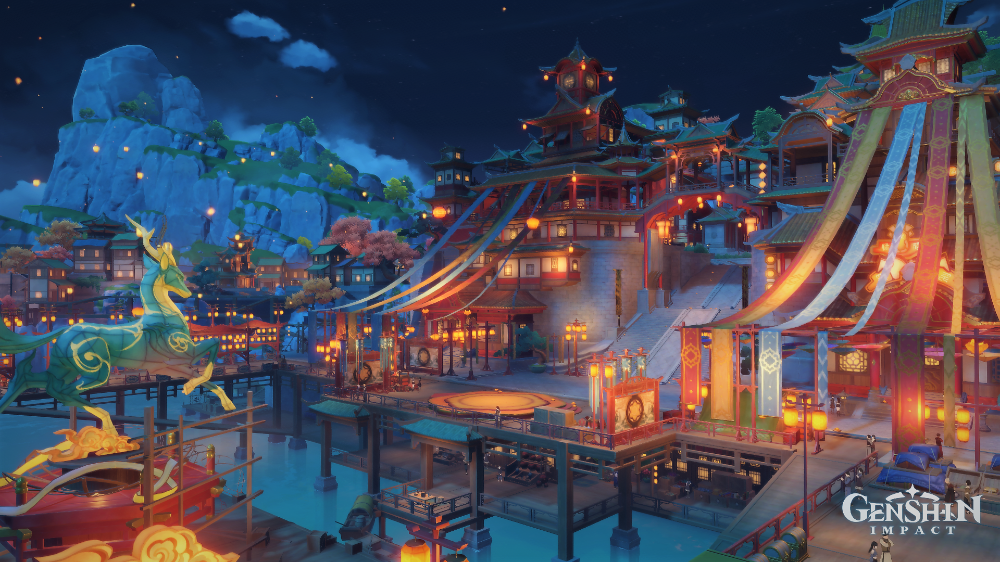

Start your journey through Teyvat by visiting the first four nations that await your arrival. These guides are here to inform you of the nations you will set foot on, its histories, its Archons, and other information that will help in your travelling. Starting with Mondstadt, The City of Freedom, to the harbors of Liyue, then the lonesome island of Inazuma, then to the knowledge-filled nation of Sumeru. Be prepared for the journey that awaits you, dear traveler!
The nation of Liyue, located in the eastern part of the continent of Teyvat, is known as the "Nation of Contracts." It is one of the seven regions and is famous for its thriving trade, rich traditions, and deep respect for agreements and ancient customs. Its capital, Liyue Harbor, is the most prosperous port in all of Teyvat, serving as the heart of trades and culture. Liyue worships Rex Lapis, the Geo Archon and God of Contracts, also known as Morax. He is the oldest among the Seven Archons and ruled Liyue for thousands of years. Eventually, he entrusted the nation's future to its people by stepping down from power and letting the Liyue Qixing, a council of mortal leaders, govern the land. Even after his departure, Rex Lapis is still deeply respected by both the Adepti and the citizens. Liyue's identity is built on order, tradition, and human strength.
In Liyue, the Geo Archon Rex Lapis ruled for thousands of years through the power of contracts, shaping the land alongside the Adepti and guiding its people toward prosperity. During the annual Rite of Descension, Rex Lapis suddenly drops dead, sparking panic across the nation. As the Traveler investigates, they discover that the Fatui are involved in a plot to steal his Gnosis, only to find that there is none in his body. In an attempt to force the situation, Fatui Harbinger Tartaglia uses counterfeit Seals of Permission to summon the ancient sea god Osial which unleashed chaos on Liyue Harbor. Then a fierce battle follows, with the combined forces of the Traveler, the Liyue Qixing, and the Adepti ultimately defeating Osial. Afterward, it is revealed that Rex Lapis had faked his death, orchestrating the entire ordeal as a test to see whether the people of Liyue could stand on their own without divine protection. Seeing their strength and unity, he chooses to retire as an Archon, surrendering his Gnosis to the Fatui as part of a final contract and entrusting the nation's future to its people.
| Characters | Roles/Factions | Vision/Element |
| Zhongli | Former Geo Archon, Consultant at Wangsheng Funeral Parlor | Geo/Earth |
| Ningguang | Tianquan of the Liyue Qixing | Geo/Earth |
| Ganyu | Half-qilin Adeptus, Secretary to the Liyue Qixing | Cryo/Ice |
| Xiao | Adeptus and Guardian Yaksha | Anemo/Wind |
| Hu Tao | 77th Director of the Wangsheng Funeral Parlor | Pyro/Fire |
| Yelan | Intelligence Agent for the Ministry of Civil Affairs | Hydro/Water |
| Xingqiu | Second son of the Feiyun Commerce Guild | Hydro/Water |
| Baizhu | Owner of Bubu Pharmacy and Qiqi's guardian | Dendro/Nature |
| Beidou | Captain of The Crux Fleet | Electro/Lightning |
| Keqing | Yuheng of the Liyue Qixing | Electro/Lightning |
| Xiangling | Head Chef at Wanmin Restaurant | Pyro/Fire |